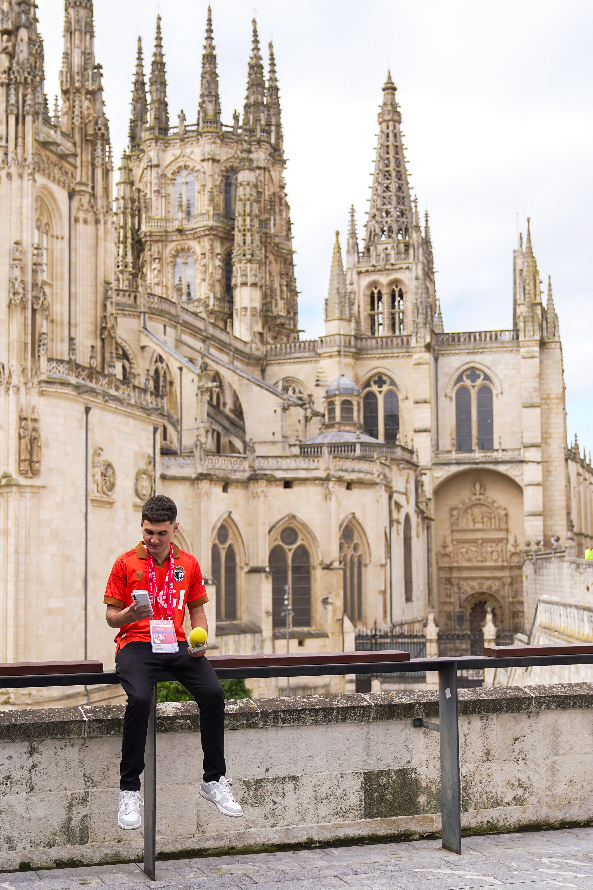

Saltar al contenido
Fanáticos del fútbol
.
Inicio
Artículos
Programas
Vídeos y entrevistas
Quiénes somos
Vídeos y entrevistas
Entrevistas, ruedas de prensa y reportajes sobre el Burgos CF.
Todos los vídeos

Entrevista
26/10/2026
PRUEBA